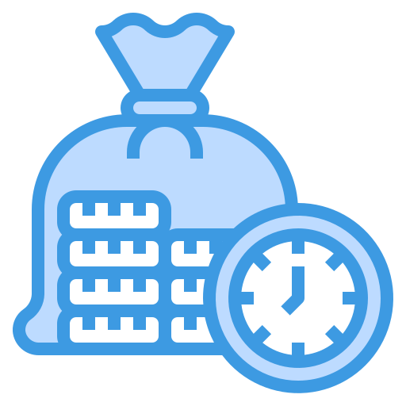
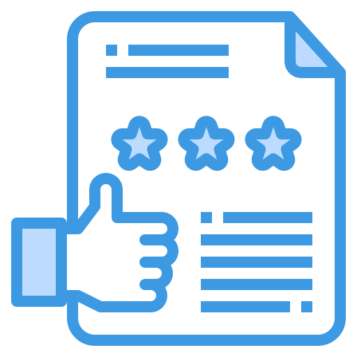
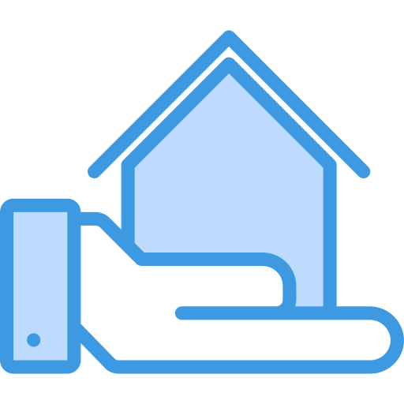
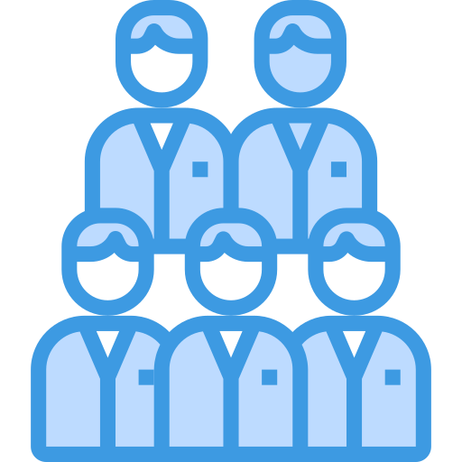

Welcome to Your Source for Local Lending!
We understand that buying a home and going through the process of getting a mortgage can be a big step. But we want to be here to make the loan process easy and bring clarity to what can be a daunting process. For over a decade, we have been serving the greater Western Washington area and we have focused on the idea that “mortgages may be what we do, but integrity is who we are”. So, give us a call if you are in need of a mortgage to purchase or refinance your home – from your first interaction with us, we want you to see what sets us apart, and together we can help find a clear path forward to your mortgage solution.
Who Are We?
We are Professional Full Service Lenders
The mortgage world is almost always tied to a real estate agent. We have built relationships with some of the best real estate agents in the industry who serve our community. Need an agent? Check out our featured agents here to see if one of these agents match what you are looking for!
Our Team
Sam Borthwick
Branch Manager
NMLS: 1067178
Earnest-Will Borthwick
Loan Officer
NMLS: 1831678
Jeff Pont
Loan Officer
NMLS: 244524
Dylan Rudnick
Loan Originator
NMLS: 1918075
Duane Stenson
Mortgage Loan Originator
NMLS: 1508654
Our Loans
Click to learn more
You have many options for types of loan, including loan options for veterans, people looking for homes in rural areas, borrowers with credit problems, homes in expensive areas, and homeowners looking to renovate.
First Time Home Buyer
Click to learn more
Buying a home can be challenging for a first-time home buyer, and at Get Local Lending, we want to be your resource to guide you through this exciting and sometimes, challenging process.
Loans for Business Owners
Click to learn more
At Get Local Lending we understand the challenges that a business owner may face when trying to jump through the hoops of getting a mortgage – it can be challenging and irritating.
What Makes Us Different
- Great Communication We keep our clients informed every step of the way. We pride ourselves on educating or clients so that they can make sound financial decisions that will fit within their overall financial goals.
- Prioritizing Your Timeline Your closing timeline is our first priority. Our systematic mortgage approval process will get you to the closing time on time and under budget.
-  Competitive Rates We work with our clients to not only find the right mortgage, but the right cost as well so that they can get a monthly payment that fits within their budget.
- Professional Support We will be there to help you navigate the process and avoid the common pitfalls in the mortgage process.
 Personalized Communications
We’re more interested in a relationship – not a single transaction. This is easy to say, and there is really only one way to prove it.
Personalized Communications
We’re more interested in a relationship – not a single transaction. This is easy to say, and there is really only one way to prove it.
-  Reviews & Testimonials We take pride in our reviews and what our clients say. We encourage you to check out our reviews on Google and some of our testimonials.
-  Always Here For You Whether you are a first time home buyer or a seasoned investor, we are committed to setting up our clients to win both in the short term, but also in the long run.
- White Glove Experience High tech – high touch. From the first moment we speak with a client, we believe in the “high tech – high touch” approach. From their own phone, we want our clients to have multiple points of contact and constant answers.
-  No One Size Fits All Every loan starts with a consult. Loans should NOT be treated like a “one size fits all” product. For us, we are regularly approached by clients that have been put into a loan product that they should not be in, because there is a better option!
Our Loans
There are mortgage solutions for just about any situation out there that you can imagine. There have been times that our clients have found themselves pushed into options that might not be the best for them. If you aren’t sure what home loan program will fit your situation best, that’s okay – just give us a call and we’ll help you map out what’s important. Not only now, but in the future as well.
- Select a loan type from below to learn more:
- Conventional When you think of a mortgage, you are probably thinking about a conventional loan. Conventional loans are what you would categorize as a ‘standard’ mortgage or home loan.
- FHA An FHA loan is a government backed mortgage loan that is insured by the Federal Housing Authority (FHA). FHA loans have some advantages for certain clients based on where they are at in life and what their financial constraints are.
- VA At Get Local Lending, we are proud to serve the military community. Especially here in Western Washington, we have a concentration of Navy, Army, and Air Force active duty service members and veterans from all the branches.
- USDA Income-qualified borrowers looking to get loans on homes in U.S. Department of Agriculture-approved rural areas can enjoy a number of benefits through this government-insured loan program.
- Refinance If you need help gaining clarity as to whether or not a refinance of your existing mortgage is right for you, please call us so we can have a real conversation about where you are and what your goals are for a mortgage.
The Conventional Loan
When you think of a mortgage, you are probably thinking about a conventional loan. Conventional loans are what you would categorize as a ‘standard’ mortgage or home loan. Typically, these have a few tighter requirements for the borrower, but are less strict on the property unlike you would see with a FHA or VA loan and most lenders will offer them. Credit requirements can range as low as a 640 credit score, and there are programs at times where you can qualify with down payments as low as 3% down. The programs vary at different times, but here at Get Local Lending, we are proud to offer some of the most competitive options out there.
Because they are so widely available, and the low interest rates being offered, conventional loans are some of the most popular options and most used mortgage products in the US.
Conventional loan requirements
Conventional loan requirements can range depending on the program that fits your needs. Keep in mind though, conventional loans have guidelines that are set by Fannie Mae and Freddie Mac. These guidelines will set minimum standards like a 640 credit score, a debt to income ratio that is less than 49%, and as low as 3% down payment.
It’s important to keep in mind that the more you are qualified, (better credit score and larger down payment), the better your interest rate and lower down payment. At Get Local Lending, we don’t just fill out paperwork to get our clients a mortgage, we want to do the initial legwork to get you positioned to get the best loan and rates available! It’s important to keep in mind that different programs will have different requirements for conventional loans, so we will work to find the mortgage that fits your needs.
Typical conventional loan down payments
Bear in mind, mortgage programs change regularly, but this outline will give you a rough idea of what lenders are typically looking for as a down payment in different conventional loan programs:
- Conventional 97 loan — as low as 3% down
- Fannie Mae HomeReady loan — as low as 3% down
- Freddie Mac Home Possible loan — as low as 3% down
- Conventional loan with PMI — 5% down
- Upfront MI (Single payment PMI) — 10% down
- Conventional loan without PMI — 20% down
Advantages of a conventional mortgage loan
Flexible repayment schedules. Conventional loans can come in 7,10, 15, 20, 25 and 30 year loans repayment schedules. Most of our clients stick with the 15 or 30 year repayment plans, but flexibility is great when considering the bigger picture of our client’s goals.
Best long term loan. When it comes to overall cost, a conventional loan is typically the least expensive long term loan. However every situation is different, be sure to check with one of our experts to see if it’s a good fit for you.
Helpful Guides
First Time Home Buyer
Click to learn more
Buying a home can be challenging for a first-time home buyer, and at Get Local Lending, we want to be your resource to guide you through this exciting and sometimes, challenging process.
Loans for Business Owners
Click to learn more
At Get Local Lending we understand the challenges that a business owner may face when trying to jump through the hoops of getting a mortgage – it can be challenging and irritating.